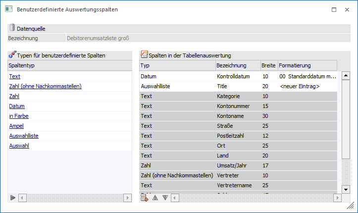
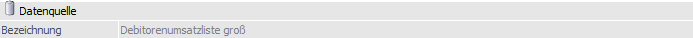
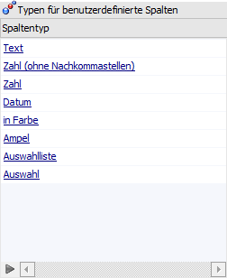
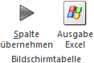
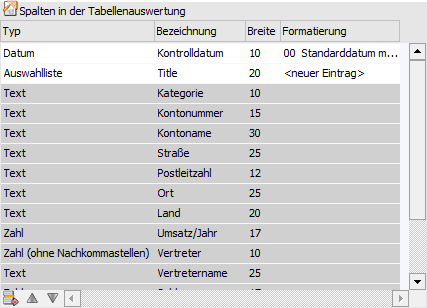
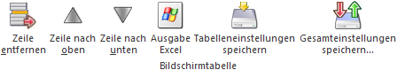

Sobald in der Datenquellenverwaltung eine einzelne Datenquelle (Snapshot) aus dem Bereich "Anwendung" selektiert wurde, steht der Tabellenbutton "Tabellenausgabe bearbeiten" zur Verfügung. Durch Anwahl dieses Buttons wird das Fenster "Benutzerdefinierte Auswertungsspalten" geöffnet, in welchem Anmerkungsfelder (sogenannte "Annotations") für die Datenquelle kreiert werden können.
Hinweis
Die Anlage und Pflege von Anmerkungsfelder erfolgt bei "List"-Datenquellen im Programm "List - Assistent". Bei "FORM"- und "Enterprise Cube"-Datenquellen stehen "Annotations" wiederum nicht zur Verfügung.

Das Fenster ist hierbei in die folgenden drei Bereiche unterteilt:
ü Datenquelle
ü Tabelle "Typen für benutzerdefinierte Spalten"
ü Tabelle "Spalten in der Tabellenauswertung"
Datenquelle

Ø Bezeichnung
Hier wird die Bezeichnung der zu bearbeitenden Datenquelle angezeigt. Dieses Feld kann nicht editiert werden.
Tabelle "Typen für benutzerdefinierte Spalten"

Der Spaltentyp legt fest, welche Art von Daten in einer Spalte gespeichert werden kann. Folgende Typen stehen zur Anlage von benutzerdefinierten Spalten zur Verfügung:
ü Zeichen
Spalten mit dem Typ
"Zeichen" können beliebigen Text mit einer maximallänge von 255 Zeichen
enthalten.
ü Zahl
Spalten mit dem Typ "Zahl"
können positive sowie negative Zahlen mit Nachkommastellen enthalten. Der
Zahlenwert wird als Datentyp double gespeichert.
ü Zahl (ohne
Nachkommastellen)
Spalten mit dem Typ "Zahl (ohne Nachkommastellen)" können
positive sowie negative, ganze Zahlen enthalten. Der Zahlenwert hat den Datentyp
integer, kann also maximal zehn Dezimalstellen umfassen.
ü Datum
Spalten mit dem Typ
"Datum" können einen Zeitpunkt, in Form eines Kalenderdatums und einer Uhrzeit
enthalten. Die Art bzw. Anzeige des Datums kann in der Spalte "Formatierung"
definiert werden (nähere Details entnehmen Sie bitte dem Kapitel "Bereich
"Variablen""- Feld "Formatierung").
ü in Farbe
Spalten mit dem Typ
"in Farbe" dienen zur farblichen Hervorhebung / Unterlegung von
Auswertungszeilen. Die Definition der Farbe erfolgt in der Spalte
"Formatierung", wobei die Farbe als RGB-Dezimalwert hinterlegt werden kann oder
per Matchcode gewählt wird. Erfolgt keine Farbdefinition und die Variable "in
Farbe" ist im Aufbau nur 1x vorhanden, so wird eine gelbe Farbunterlegung
automatisch genutzt.
In der Tabelle kann per Klick in die Spalte die
Farbzuweisung aus der Definition aktiviert bzw. deaktiviert werden. Die
Aktivierung wird hierbei auch mit Hilfe des Icon angezeigt.
Soll eine abweichende
Farbe in der Tabelle verwendet werden, so kann der Farben - Matchcode per
Doppelklick in der Spalte geöffnet werden.
ü Ampel
Spalten mit dem Typ
"Ampel" enthalten ein Symbol, das die Werte rot, gelb und grün annehmen kann.
Ein Klick auf das Symbol ändert dessen Farbe.
Außerhalb der
Tabellendarstellung, bspw. als Bildschirmausgabe werden statt den Ampel-Symbolen
Zahlenwerte dargestellt.
ü - rot = 0
ü - gelb = 50
ü - grün = 100
Beispiel


ü Auswahlliste
Spalten mit dem
Typ "Auswahlliste" enthalten Textwerte, die durch ein Drop-Down-Feld vorgegeben
werden.
Hinweis
Wenn ein Element der Auswahlliste mit einem "!" endet (z.B. Achtung!), so kann die Auswahlliste in der Tabelle der Ausgabe nicht mehr dynamisch ergänzt werden.
ü Auswahl
Spalten mit dem Typ
"Auswahl" enthalten eine Checkbox.
Benutzerdefinierte Spalten können auf folgenden Wegen der Tabellenauswertung hinzugefügt werden:
ü Klick auf den Spaltentyp
Die
Spaltendefinition wird als letzte Zeile eingefügt.
ü Klick auf den Button
Die Spaltendefinition wird als letzte
Zeile eingefügt.
ü Drag & Drop des Spaltentyps in
die Tabelle "Spalten in der Tabellenauswertung"
Die Spaltendefinition wird
über jener Zeile eingefügt, auf welche die neue Spalte gezogen wird.
Tabellenbuttons "Typen für benutzerdefinierte Spalten"

Ø Spalte übernehmen
Mit Hilfe dieses Buttons wird die gewählte Annotation in die Tabelle "Spalten in der Tabellenauswertung" übertragen.
Ø Ausgabe Excel
Durch Anwahl des Buttons "Ausgabe Excel" wird der Inhalt der Tabelle an Microsoft Excel übergeben.
Tabelle "Spalten in der Tabellenauswertung"

Diese Tabelle umfasst alle Spalten, welche in der Tabellenauswertung enthalten sind.
Ø Farbe
Über die Farbe der Zeile wird dargestellt, ob es sich um eine Standardspalte (graue Hinterlegung; nicht editier- oder löschbar) oder eine benutzerdefinierte Auswertungsspalte (weiße Hinterlegung; editier- und löschbar) handelt.
Ø Typ
Der Spaltentyp legt fest, welche Art von Daten in einer Spalte gespeichert werden kann. Sowohl benutzerdefinierte als auch Standardspalten haben einen bestimmten Spaltentyp (nähere Informationen siehe Abschnitt "Typen für benutzerdefinierte Spalten").
Ø Bezeichnung
Jeder Spalte kann eine beliebige Bezeichnung zugewiesen werden, die in der Auswertung als Spaltentitel dient.
Ø Breite
Jeder Spalte kann eine maximale Breite zugewiesen werden. Die Spaltenbreite ist als Anzahl der Zeichen angegeben.
Hinweis
Standardspalten werden bei Überschreiten der Breite angeschnitten. Benutzerdefinierte Spalten können wiederum höchstens die angegebene Anzahl an Zeichen enthalten.
Ø Formatierung
In dieser Spalte können für die Spaltentypen "Datum", "in Farbe" und "Auswahlliste" Formatierungen oder Standardwerte hinterlegt werden
Tabellenbuttons "Spalten in der Tabellenauswertung"

Ø Zeile entfernen
Mit Hilfe dieses Buttons können benutzerdefinierte Spalten wieder entfernt werden.
Ø Zeile nach oben / Zeile nach unten
Durch Anwahl dieser Buttons kann die Reihenfolge der Spalten angepasst werden.
Ø Ausgabe Excel
Durch Anwahl des Buttons "Ausgabe Excel" wird der Inhalt der Tabelle an Microsoft Excel übergeben.
Ø Tabelleneinstellungen speichern
Die Spalten einer Tabelle können grundsätzlich an beliebige Positionen verschoben, bzw. in der Breite entsprechend angepasst werden. Durch Anwahl des Buttons "Tabelleneinstellungen speichern" werden die Einstellungen benutzerspezifisch gespeichert und bei dem nächsten Aufruf des Programmpunktes wieder vorgeschlagen.
Ø Gesamteinstellungen speichern
Im Gegensatz zu "Tabelleneinstellungen speichern" können mit "Gesamteinstellungen speichern" mehrere Tabellenaufbauten gespeichert und nach Wunsch geladen werden. Zusätzlich werden Sonderfunktionen der Tabelle (z.B. "Spalte gruppieren") ebenfalls bei der Speicherung bedacht.
Buttons
Ø Ok
Durch Anwahl des Buttons "Ok" bzw. der Taste F5 werden die Änderungen gespeichert.
Hinweis
Annotations werden direkt in der jeweiligen Datenquelle gespeichert. Aus diesem Grund sind die benutzerdefinierten Auswertungsspalten nur dann sichtbar, wenn die Liste aus einer Datenquelle erstellt wird.
Ø Ende
Durch Anklicken des Buttons "Ende" bzw. der Taste ESC wird das Fenster geschlossen und alle nicht gespeicherten Änderungen verworfen.
Ø Datenquelle ausgeben
Mit Hilfe dieses Buttons können Datenquellen von Applikationsauswertungen als Tabelle ausgegeben werden.